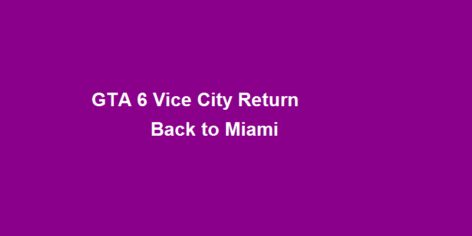

GTA 6 Returns to Vice City: 5x Larger Map, Modernized Setting, and Revolutionary Gameplay
Get ready to cruise down Ocean Drive with the top down again! GTA 6 is officially returning to Vice City, but this isn't the 1980s Miami you remember. Welcome to a modernized, massively expanded criminal paradise that's 5 times larger than GTA 5's Los Santos.
🗺️ Map Scale: From Miami to the Entire State of Leonida
The biggest surprise? Vice City is just the starting point. The full map includes:
- Vice City Metro: Modern Miami with enhanced districts and verticality
- Everglades Wilderness: Swamps, forests, and hidden criminal operations
- Florida Keys: Island chains perfect for smuggling and luxury getaways
- Port Gellhorn: Industrial port city inspired by Tampa
- Rural Areas: Farmlands, small towns, and hidden backroads
Total playable area: approximately 150 square miles, making it the largest map in GTA history by a significant margin.
💡 Player Benefit: Endless Exploration Opportunities
This isn't just about size—it's about density. Every square mile is packed with activities, hidden secrets, and dynamic events. From high-speed boat chases through the Keys to airboat adventures in the Everglades, the variety is staggering.
🏙️ Modern Setting: 2020s Miami Vibes
Gone are the pastel suits and synthwave. Welcome to contemporary Vice City featuring:
- Modern luxury high-rises and condominiums
- Tech startup culture and cryptocurrency scams
- Social media influencer culture and viral challenges
- Updated criminal enterprises (cybercrime, modern smuggling)
- Current vehicle models and fashion trends
Rockstar's research team spent months in Miami capturing the current atmosphere, from Wynwood's art scene to South Beach's nightlife.
🎵 Soundtrack Revival: Classic Radio Stations Return
While the setting is modern, the music pays homage to Vice City's legacy:
- V-Rock: Classic rock with new tracks and returning DJs
- Flash FM: 80s pop hits mixed with modern remixes
- Wave 103: New wave and synthpop classics
- New Stations: Reggaeton, modern hip-hop, and electronic channels
Many original voice actors are returning, including the iconic Lazlow Jones for talk radio segments.
🌊 Environmental Interactions: Living, Breathing World
The new RAGE engine enables unprecedented environmental interactions:
- Dynamic weather affecting gameplay (hurricanes, floods)
- Real-time property damage and reconstruction
- NPC routines that change based on time and location
- Wildlife behavior in wilderness areas
- Water physics for boats and swimming
Leaked footage shows players using hurricanes as cover for heists and floods to escape police.
🎮 Gameplay Innovations: Beyond the Expected
Beyond the expanded map, new features include:
- Underwater exploration and treasure hunting
- Improved flying mechanics with realistic physics
- Enhanced social interactions and reputation systems
- Property management across the entire state
- Dynamic economy affected by player actions
💬 Community Discussion
What are you most excited about in the return to Vice City? Which classic feature do you hope makes a comeback? Join the conversation!
💡 Discussion Topics:
- What modern Miami elements should be included?
- Which classic Vice City character should return?
- How will the larger map change your gameplay style?